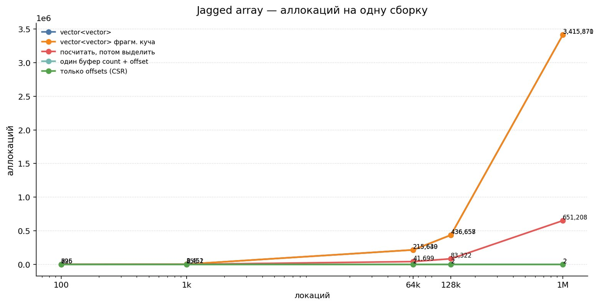
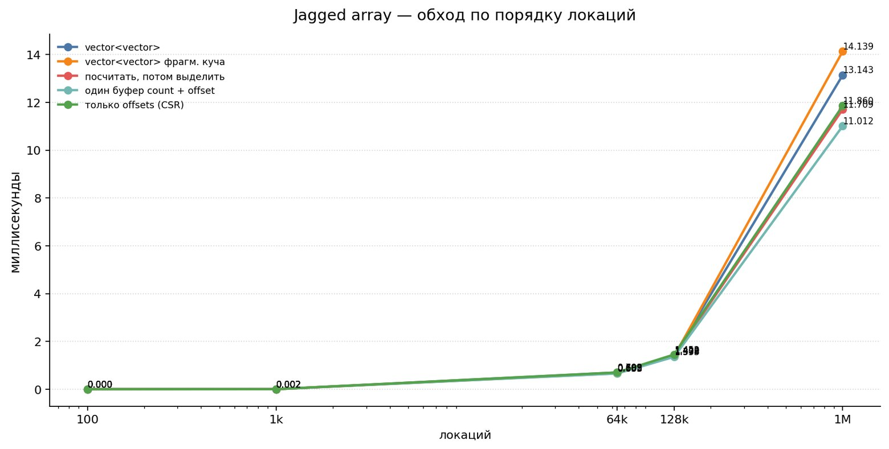
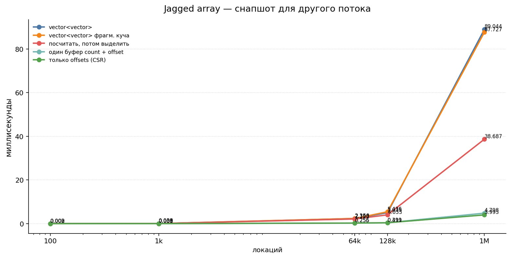
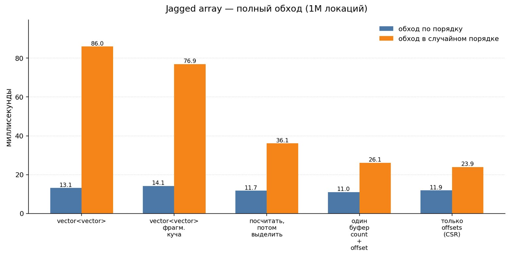
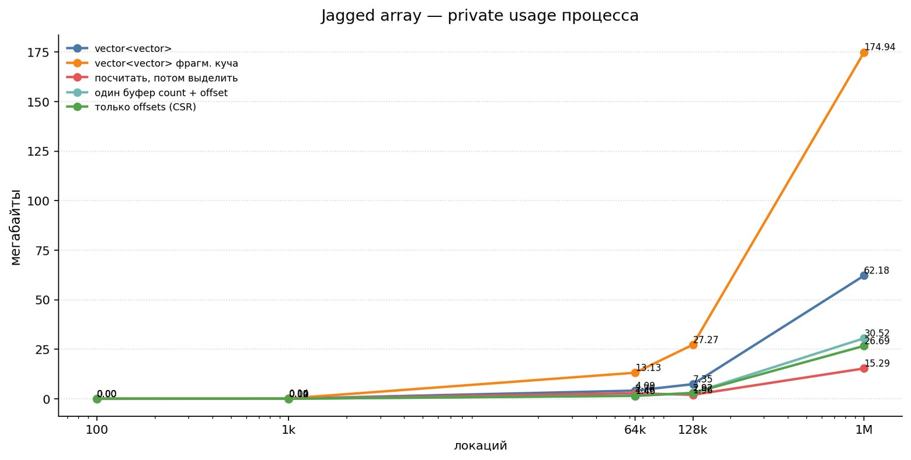

On one of our projects (a 4X historical strategy game) we got the task of moving part of the logic onto worker threads by handing them a snapshot of the game state. The idea was that while the main thread crunches its tick, the others (AI, pathfinding, UI and so on) could spin their own logic, things like "who is standing in this location", and do it without locks or the risk of seeing half of someone else's write. To build such a system you have to figure out how to get a reverse index of regiments by location, and make lookups cheap for the threads. In other words, each thread needs its own snapshot of some part of the game world as of the moment the update starts (a frame, a logic tick, a day, a month, etc.).
The common practice is to make the data immutable for the duration of a frame, build the required index once at the start, and then let the readers work with it. And so, from the guys who were doing this task, the following code landed in review (I'll show only the essential part here):
struct Regiment {
unsigned int location;
float health;
float mood;
float speed;
};
std::vector<Regiment> regiments; // all regiments in the world
std::vector<std::vector<unsigned int>> by_location(location_count);
for (unsigned int r = 0; r < regiment_count; ++r) {
by_location[regiment_location[r]].push_back(r);
}
... here we do something with the resulting arrayThis structure (regiments) is called a jagged array, an array of arrays (I showed why you'd want one and how to work with it in the Game++ book), or, if academic terminology is closer to your heart, CSR (compressed sparse row), which is a slightly different way of storing such arrays, or sparse matrices. Structures like this are pretty common in games when you have lots of locations and need to:
- find out what loot is laid out in each location, which armies belong to each area;
- or which monsters live in a location, which locations make up an area, which areas make up a region;
- or check a location's neighbors on the map, the region adjacency that pathfinding and all the area flood-fills in grand strategies are built on;
- or find nodes in a scene hierarchy or a skeleton;
- look up entities by world chunk, components by entity, entities by archetype in an ECS;
- find subscribers by event type, active modifiers by object;
- walk a location's neighbors and collect some metrics;
- select regiments by army / corps to compute the formation's total
healthand averagemood; - the same "owner → set of entities" relationship for buildings in a location, orders on a market, modifiers on a country, neighbors on the map, entities by chunk in an ECS.
- and lots more...
What these examples have in common is that the relationships between elements are already present in the source data. We don't need to invent any new links, we just need a structure that lets us quickly pick out a certain subset. For example, if there is a list of armies with a note of where each one is standing, we need to quickly get the reverse index of armies by location or position, ideally in constant time and without stirring up the CPU cache too much.
Another implicit property is that we update this structure rarely and read it many times. We update it when the map loads, at the start of a frame or after the scene is rebuilt, and in general when exactly doesn't matter; what matters is that the build and query phases are separated. That looks like a pretty harsh restriction, but look at the list above... almost all of that data doesn't change its position within the overall structure over some time interval, and that opens the door to all kinds of tricks and hacks.
The idea vs real life
And everything seems fine as long as your array of arrays is small, but in our use case it turned out that after mid-game a snapshot of this structure costs more than all the work it was made for. For example, copying a std::vector<std::vector<unsigned int>> for a million locations is a deep copy of a million vectors and takes 90 milliseconds (on my machine; don't stare at the numbers, they're illustrative, what matters is how they relate to each other, not the absolute time). A full traversal of the same structure, the very thing the snapshot is needed for, takes 14 milliseconds. So we were going to parallelize 14 ms of work and paid 90 ms just to get started. For the tests I used a million elements in the outer array and six million elements in total across the inner ones, i.e. six per list on average, which is actually not much, and that's roughly what piles up across various systems by mid-session in something like Victoria 3/EU4.
Let's count what we paid for. The outer array's std::vector on a 64-bit system is 24 bytes (three pointers, or a pointer plus two sizes), and a million elements take 24 megabytes just for the bookkeeping, before any data at all. Moreover, those 24 bytes are paid for every location, including empty ones. If units are standing in five percent of the map's locations, the other 95% honestly occupy their 24 bytes too, but, worse, they also take up cache space when you walk this array of arrays.
Another implicit property that often gets overlooked is the reserve (capacity): the actual size of a vector's memory block grows faster than the vector's real size, and our 6 elements actually occupy eight "slots" of data.
That's not all, and here we have to remember the allocator metadata and block rounding, which are hidden from us but also take up space on the heap: with glibc, the chunk header plus alignment turn a 32-byte request into a 48-byte block, so data that is only 24 bytes in size costs 48.
And that's still not all: to get to capacity 8, the vector allocates four times and copies what it has accumulated three times along the way, so building a million lists gives us roughly four million mallocs and three million frees. Granted, this isn't about memory anymore and it's all spread across frames, but it's pure time that has to be taken away from the game. I call it "smeared" perf, in the sense that we've "smeared" our frame time across lots of tiny places. In total, per element we get (~roughly): 24 bytes for the outer vector, 48 bytes for the heap block, and seventy-two bytes to store twenty-four.
Naive layout, a million locations:
regiments[] heap (blocks scattered)
+----------------+ +--------------------------+
| ptr size cap | ---------> | hdr | 7 idx | 2 unused | 48 bytes
+----------------+ +--------------------------+
| ptr size cap | ---------> | hdr | 4 idx | 2 unused | 48 bytes
+----------------+ +--------------------------+
| ptr size cap | --> nullptr (location is empty, but 24 bytes are paid for)
+----------------+
24 bytes + 48 bytes = 72 bytes per 24 useful
// roughly, depends on the build configuration
regiments[] [ {loc, health, mood, speed}, ... ] // dense array of entitiesAnd here comes the important point, the reason it made sense to dig into this code at all and fix something inside the array of arrays. All that byte math above and the talk about memory size is just a consequence; the main reason is, once again, the cache. When the game update walks the locations and reads mood and speed for every regiment, the CPU makes at least two memory accesses per list to get the index: one into by_location[i], a second through the pointer into the heap, and then one more for the data. But the second and (especially) the third jump will be an almost guaranteed miss, where the CPU has to stall and go to L2/L3 or even main memory, because the blocks lie all over the place (possibly between other game subsystems' allocations). And while the CPU waits for memory to answer, it does nothing, and those idle cycles turn into frame drops when "you only have a million objects".
Measurements, so we have something to compare against
Further on I'll keep coming back to the first benchmark (a million locations, six million structures, random long-tailed distribution across locations, x86-64, MSVC 19.4 in release). A long tail means that part of your data falls out of the cache and you have to go to main memory for it. Measured separately:
- build — build the location → entities index from scratch;
- query — walk all the lists in location order (read
health/mood/speed) and run some logic over them; - query random — the same as query, but the locations are visited in random order (this is what a real gameplay query looks like, when the player is doing something during the game);
- snapshot — a deep copy of the index for another thread (start of the frame, we hand the data out to the threads);
- teardown — free the index (rare; this kind of thing should be deferred to the end of the frame).
| Variant | Memory | Allocations | Build | Query | Query random | Snapshot | Teardown |
|---|---|---|---|---|---|---|---|
vector<vector<uint>> | 63.1 MB | 3.42M | 1045 ms | 14.5 ms | 96.8 ms | 96.7 ms | 61.8 ms |
Why so many allocations? Because we don't know the length of each list in advance, and that's where we get the capacity growth, the chain of reallocations, and the slack in the buffer.

Hack one
But nothing stops us from asking each entity for its location — the data is already there, we just need to walk it one extra time and count, so...
struct RegimentList {
unsigned int count = 0;
unsigned int written = 0;
unsigned int* data = nullptr;
};
std::vector<RegimentList> by_location(location_count);
// pass 1: how many regiments are in each location
for (unsigned int r = 0; r < regiment_count; ++r)
by_location[regiments[r].location].count++;
// pass 2: allocate exactly as much as needed
for (unsigned int i = 0; i < location_count; ++i)
if (by_location[i].count > 0)
by_location[i].data = new unsigned int[by_location[i].count];
// pass 3: distribute the indices
for (unsigned int r = 0; r < regiment_count; ++r) {
RegimentList& list = by_location[regiments[r].location];
list.data[list.written] = r;
list.written++;
}Yes, now there are three passes instead of one, but less time is spent, because the extra passes over a dense array are cheap, while the three million reallocations we saved are expensive. This, by the way, is the common storyline of optimizations of this kind: a linear pass over memory is almost free compared to any work on the heap.
Along the way we threw std::vector out of the inner lists, and we no longer need its size and capacity: we already know the length, and the list won't grow any further until the next update. What's left is a 16-byte struct instead of 24 and one heap block per non-empty list.
A separate word about the temptation to replace all of this with a reserve() with a guessed number. It won't work: guess too low and you're back to reallocations, guess too high and you pay in memory for all million lists at once. Here we don't guess, we count how much we'll have in memory and lay the data out. Let's see what we got after this trick:
| Variant | Memory | Allocations | Build | Query | Query random | Snapshot | Teardown |
|---|---|---|---|---|---|---|---|
vector<vector<uint>> | 63.1 MB | 3 409 088 | 1045 ms | 14.5 ms | 96.8 ms | 96.7 ms | 61.8 ms |
| Count, then allocate | 46.7 MB | 650 599 | 153 ms (‑x6.6) | 13.7 ms (‑x1.10) | 40.8 ms | 44.0 ms | 28.0 ms |
And the result is quite interesting: we sped up build and memory dropped by a factor of one and a half, but query barely changed, which makes sense, since we're still making two jumps through memory per list before getting to regiments[id].mood. On the other hand, random-access time improved, because the data is packed more densely and more of it fits in the cache.
Hack two
Noticed that each list still lives in its own allocation? We got rid of the vectors, but the allocations themselves didn't go anywhere, so we still have the heap metadata, the scattering in memory, and the need to drag an 8-byte pointer around in every record.
If we counted the sizes in the first step, why not allocate one big buffer for all the lists and lay them out in it back to back? Then we get just one allocation and lists laid out at offsets; the pointer becomes unnecessary and an offset is enough, and unless you allocate more than 4 GB, an offset lives perfectly well in 32 bits. As you can see, we only have about 48 MB of data, so that suits us just fine.
Solving this takes almost no new code: in the previous variant we already had to introduce an offset for each list to know which slot to write the next element into. The only difference is that now offset starts not from zero, but from the sum of the lengths of all preceding lists. This is a well-known trick, and it's called a prefix sum.
struct RegimentList {
unsigned int count = 0;
unsigned int offset = 0;
};
std::vector<RegimentList> by_location(location_count);
for (unsigned int r = 0; r < regiment_count; ++r)
by_location[regiments[r].location].count++;
// prefix sum: where each location's list begins
unsigned int sum = 0;
for (unsigned int i = 0; i < location_count; ++i) {
by_location[i].offset = sum;
sum += by_location[i].count;
}
// one allocation for all indices at once
std::vector<unsigned int> data(sum);
for (unsigned int r = 0; r < regiment_count; ++r) {
RegimentList& list = by_location[regiments[r].location];
data[list.offset] = r;
list.offset++;
}
// offset has moved forward by the list length, move it back
for (unsigned int i = 0; i < location_count; ++i)
by_location[i].offset -= by_location[i].count;Here's how our data will now be laid out in memory:
Merged layout:
regiments[] blob[] — one buffer for everything
+---------------+ +---+---+---+---+---+---+---+---+---+---+---+
| cnt=1 off=0 |----------> | 0 | |
+---------------+ +---+---+---+---+---+---+---+---+---+---+---+
| cnt=6 off=1 |--------------->| 1 | 2 | 3 | 4 | 5 | 6 |
+---------------+ +---+---+---+---+---+---+---+---+
| cnt=5 off=7 |--------------------------------------->| 7 | 8 | ...
+---------------+ +---+---+
8 bytes + 24 bytes of data = 32 bytes per 24 useful
// the data lives separately
regiments[] [ {loc, health, mood, speed}, ... ]And what we get in terms of time:
| Variant | Memory | Allocations | Build | Query | Query random | Snapshot | Teardown |
|---|---|---|---|---|---|---|---|
vector<vector<uint>> | 63.1 MB | 3 409 088 | 1045 ms | 14.5 ms | 96.8 ms | 96.7 ms | 61.8 ms |
| Count, then allocate | 46.7 MB | 650 599 | 153 ms (x6.6) | 13.7 ms (x1.10) | 40.8 ms | 44.0 ms | 28.0 ms |
| Single buffer, count + offset | 30.5 MB | 2 | 75.6 ms (x15) | 13.2 ms (x1.2) | 31.7 ms | 5.3 ms | 2.2 ms |
Fifteen times... not percent. With that you can go to your tech lead or even to a conference and proudly carry the banner of heroic struggle. There are now two allocations — one for the array of descriptors and one for the index buffer — but snapshotting the index has stopped being a deep copy of a million vectors and became two memcpy calls taking 5 ms instead of 90, and freeing is also just two free calls instead of hundreds of thousands. Random traversal got roughly three times faster than the first version, because neighboring regiment lists now sit densely in memory and the prefetcher manages to pull in the data needed for the calculations. The entities themselves can be snapshotted separately, with a single copy of the dense array, or not snapshotted at all... the main thing in an investigation is not to end up tracking down yourselves :) It turns out that what was expensive was precisely the convenient implementation of the jagged index via standard containers, not the access to the entity array.
Don't think I'm that clever... as usual, everything was invented before us: this trick was already used back in the eighties for laying out sprites in memory on the NES with maximum packing, because memory was scarce and sprites were plentiful :) And there the offsets were sprite indices you used when you wanted to draw one on screen.

And along the way we get a bunch of bonuses: this structure now serializes as is and can be put into a save without any traversal, just two fwrite calls, and on load another two fread calls, with no pointer fix-ups after reading. It's also copied with a single memcpy, so if you need a snapshot of the structure for another thread, you can just copy two buffers and there's no need for any deep copy of a million vectors.

Continuing the list of bonuses... this structure can now live in a linear allocator, and if it's built once per frame, you can put it entirely into memory at the start of the frame, reset the pointer at the start of the next one, and get rid of free altogether. Also, this structure no longer breaks on relocation and moves: if you ever need to move it, the indices stay valid.
Hack three
This hack arrived after half a year of using the new structure in the game, when one of my colleagues noticed that the list lengths could be optimized. Look at what happens with the lengths:
count: [ 1 7 4 4 5 ]
offset: [ 0 1 8 12 16 ]And now, what we get in the offsets array:
offset: [ 0 1 8 12 16 ]
count: [ 1 7 4 4 ... ]The length of list i is the difference of two neighboring offsets: count[i] == offset[i + 1] - offset[i]. This works because all the lists lie back to back in one buffer, and the end of one list is the start of the next, which means the length field doesn't need to be stored at all. We just need to append one element to the end of the offsets array, pointing to the end of the last list. What remains is a single array of N + 1 elements.
// N + 1 elements: regiments of location i lie between offsets[i] and offsets[i + 1]
std::vector<unsigned int> offsets(location_count + 1);
// offsets[0] starts at zero and stays zero
unsigned int* offsets1 = &offsets[1];
// pass 1: count the lengths, but write them shifted by one
for (unsigned int r = 0; r < regiment_count; ++r)
offsets1[regiments[r].location]++;
// pass 2: turn the lengths into offsets in place
unsigned int sum = 0;
for (unsigned int i = 0; i < location_count; ++i) {
unsigned int count = offsets1[i];
offsets1[i] = sum;
sum += count;
}
// pass 3: distribute the indices; the offsets move to the correct values on their own
std::vector<unsigned int> blob(sum);
for (unsigned int r = 0; r < regiment_count; ++r) {
const unsigned int location = regiments[r].location;
blob[offsets1[location]] = r;
offsets1[location]++;
}
// no fourth pass needed: offsets1[i] has moved exactly to offsets[i + 1]And we'll traverse such an array like this:
const unsigned int begin = offsets[location];
const unsigned int end = offsets[location + 1];
for (unsigned int i = begin; i < end; ++i) {
const Regiment& regiment = regiments[data[i]];
if (regiment.mood < 0.25f || regiment.health <= 0.0f) {
continue;
}
travel_budget += regiment.speed;
}
Final layout:
offsets[] [ 0 | 1 | 8 | 12 | 16 | 21 ] N + 1 elements, 4 bytes each
\___/\___/\__/
loc0 loc1 loc2
blob[] [ 0 | 1 2 3 4 5 6 7 | 8 9 10 11 12 | ... ]
4 bytes + 24 bytes of data = 28 bytes per 24 useful| Variant | Memory | Allocations | Build | Query | Query random | Snapshot | Teardown |
|---|---|---|---|---|---|---|---|
vector<vector<uint>> | 63.1 MB | 3 409 088 | 1045 ms | 14.5 ms | 96.8 ms | 96.7 ms | 61.8 ms |
| Same, fragmented heap | 174.3 MB | 3 409 088 | 1308 ms | 14.9 ms | 95.5 ms | 99.2 ms | 117.3 ms |
| Count, then allocate | 46.7 MB | 650 599 | 153 ms | 13.7 ms | 40.8 ms | 44.0 ms | 28.0 ms |
| Single buffer, count + offset | 30.5 MB | 2 | 75.6 ms | 13.2 ms | 31.7 ms | 5.3 ms | 2.2 ms |
| Offsets only (CSR) | 26.7 MB | 2 | 59.9 ms | 12.4 ms | 26.8 ms | 4.2 ms | 1.9 ms |
By removing just four bytes per element (and four megabytes across all entities), we ended up with the structure exactly as academic literature describes CSR... and on top of everything else, we got a format that sparse linear algebra libraries understand. That didn't help us much, admittedly, because unpatched Eigen runs about twice as slow as our own math, but that's a story for another time...
At small sizes (100 and 1k) all the variants are nearly indistinguishable, because the data fits entirely in the cache; the gap appears closer to 64k-128k and becomes quite large by the time we reach a million objects.
Compared to the original variant, the final one builds 17 times faster, snapshots 23 times faster, frees 32 times faster, does random traversal 3.6 times faster, uses 2.4 times less memory, and makes two allocations instead of three and a half million.

Why the gain in real code will be even bigger
Noticed the row with the fragmented heap? That's what happens when, while our array of arrays is being built, another game subsystem manages to allocate its own blocks in between our arrays, which happens in 99% of cases in a big game, and later half of them remain as holes. So instead of 63 MB in some nearby chunk of memory, we get an area three times larger with blocks scattered all over it. That shows up in the cost of the whole algorithm, and such fragmentation hits both read speed and the cost of the structure's lifecycle.

In the naive version that came in for review, the CPU makes two separate memory accesses per list, and these accesses are dependent, yet the prefetcher can't see them anyway. A cache line is only 64 bytes, and it fits either two and a half outer vectors or sixteen indices, so in the naive scheme we pull at least two lines into the cache per list and use only 24 bytes out of 128. In the final variant, a single blob[] line already covers two or three whole lists, and offsets[] is read sequentially, so the prefetcher simply feeds the next blocks of data into L1. In other words, the gain comes from having properly shaped the data for the way the CPU works.
Everything comes at a price, and here you pay with the rigidity of this structure. If the lists need to change arbitrarily, inserting into the middle means shifting the whole buffer, so this is not a structure for dynamic data: if your list changes one element at a time in response to game events, you're better off keeping the vector of vectors. But very often you can reshape the task so that the index is rebuilt entirely once (per frame, for example), and a full rebuild of a million elements turns out cheaper than maintaining a vector of vectors.
Why a million
In grand strategies like Civilization, Stellaris, Victoria or Humankind, there won't be "a million provinces on the map". A map rarely exceeds 16 thousand locations (~12k land, ~3k sea), but every country has its own snapshot of locations, and every map mode adds another layer so you can quickly switch from the general view to forests, or roads, or profitability. So the million adds up as the sum of live simulation objects, not as the size of a single locations[] array.
An outer index is needed for everything that "lies on the ground" — buildings, regiments, modifiers, demand, control — and a single pass "over all locations" is cheap in itself, but almost every subsystem builds its own reverse index or its own per-location list.
Then the economy piles on top: each building type also produces its own map of locations; add cities, unique buildings, levels, markets, trade orders, supply/demand for goods per market and location. By the end of the game all of this turns into thousands of separate entities, each with its own health / mood / speed.
And then there are temporary and derived objects, like modifiers on a country/location/army/character, event subscribers, paths. You'll never see them on the map, but they're there in memory and in the indices in the form of "owner → set of entities".
So the benchmark's "a million slots outside, six million indices inside" isn't the literal size of a strategy game's map, but the order of magnitude of the number of objects the game grows to by the middle of a long playthrough. So next time you open Task Manager and wonder why the game has eaten 24 gigabytes of RAM... don't be surprised, it's for the reasons above. And you still have to somehow make all those gigabytes move :)
This existed before games and ECS
This was invented long before us, and not even in gamedev. The "count, prefix sum, distribute" layout has been known since the mid-1950s, and the idea of storing a sparse structure as a pair of "offsets plus data" arrays came from late-1960s linear algebra, as I already mentioned with CSR and the Yale format. We simply "invented" it and applied "a bit" of numerical methods from matrix work to our problems and location lookups.
This technique, which you might like and take into your own project, isn't really about jagged arrays at all. It's about splitting the operation into build and query, so that you can build the data in a form that is radically better suited for reading. It works not only with lists: navigation meshes are built this way, ECS archetypes work this way, vertex buffers live this way. We pay for the structure once at build time so we don't pay every time we read.
When my colleagues and I were preparing a presentation of this solution for the team, I came across the 2023 article Efficient jagged arrays, where the author arrived at the same layout for mesh vertices in his project. We came at it from the side of game entities and cross-thread snapshots, he came from the side of triangle indices, but in the end we arrived at the same scheme. That in itself is a good sign that the problem comes up in development often enough that it's worth not reinventing it and finding some more reusable solution. Unfortunately, I didn't find one publicly available... maybe I didn't look hard enough.
Fundamentally, the task is the same as it was in the 80s and earlier: the data needs to be in the right place, in the right shape, by the time the hot path goes through it.
All articles